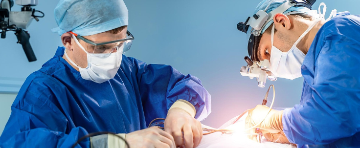
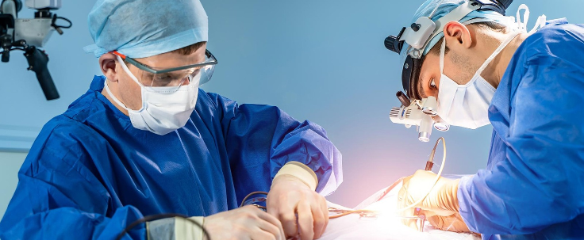

About Us
Vidyalankar Organ and Tissue Transplantation (VOTS) is a groundbreaking initiative dedicated to transforming lives. Our primary goal is to create awareness about the significance of organ donation and provide seamless, well-organized transplantation services that bridge the gap between donors and recipients.
 

Our Mission
At VOTS, we are driven by our mission to save lives through a highly coordinated and transparent process. We believe that each organ donated is not just a gift of life, but also a chance to make the world a better place for future generations. By building stronger awareness campaigns, we aim to educate communities, break myths, and encourage individuals to step forward as donors.